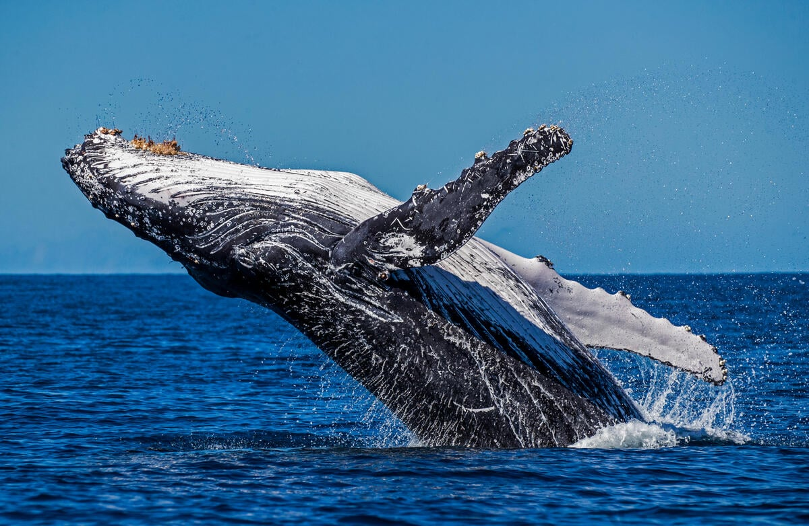

鯨魚 Whale

鯨魚
鯨魚
鯨魚
Previous
Next
性格：
鯨魚的性格因物種和個體而異，但它們普遍被
描述為聰明、社會性和溫和的生物。鯨魚是高
度社會化的動物，它們通常以群體或稱為鯨群
的形式生活。鯨群中的成員之間有密切的關係
，彼此之間會進行合作和互動。許多鯨魚種類
表現出合作狩獵的行為，例如集體捕食和餵養
幼仔。它們會彼此協作，使用聲音、姿勢和尾
巴拍擊等方式進行溝通和協調。鯨魚還會展示
出對彼此的關懷和保護，特別是對幼體和弱勢
成員。此外，鯨魚也以其智慧和學習能力而聞
名。它們能夠學習和適應不同的環境，掌握狩
獵技巧和遷徙路徑，甚至展示出創造力和遊戲
行為。鯨魚是野生動物，它們的性格和行為可
能受到環境因素、基因和個體差異的影響。鯨
魚可以表現出防衛行為，對於受到威脅或干擾
的情況可能會表現出警戒或逃逸的行為。
食物：
鯨魚的食物主要是以浮游生物和小型魚類為主
。它們以座頭鯨、鯨鯊和顎鯨等物種為代表，
透過不同的獵食策略和進食方式獲取食物。許
多鯨魚種類以浮游生物為主食，包括浮游動物
如浮游甲殼類、浮游腕足類和浮游植物如浮游
藻類。這些浮游生物通常非常微小，鯨魚利用
自身的濾食器官，如濾鬚或濾板，將海水中的
浮游生物過濾出來，並將其作為主要營養來源
。一些鯨魚也以小型魚類為食。它們可能會形
成群體狩獵，驅使魚群聚集在一起，然後通過
開口捕食來捕捉這些魚類。一些鯨魚種類可能
納大量的魚類或浮游生物，然後一次性攝食。
外表特徵＆外觀： 型，通常呈灰色或黑色，但不同的物種可能有
些許變化。它們的身體結構非常適應水中生活
，具有圓潤的外形，沒有背鰭或尾鰭骨，而是
擁有巨大而強健的尾鰭。這種尾鰭被稱為脊鰭
或鯨魚的"尾巴"，它們能夠以強大的力量拍打
水面，推動自己快速游動。鯨魚的頭部呈圓錐
形，與身體連接處呈現漸漸收窄的形狀。它們
具有單孔呼吸孔，位於頭部的頂部，可以通過
這個孔洞呼吸空氣。鯨魚的口部往往十分巨大
，有著數十顆齒齒齒的顎骨，這些齒齒齒被用
來抓住和攝食海洋生物。另一個鯨魚的特徵是
它們的鰭，它們有兩個胸鰭和一個背鰭。胸鰭
位於身體的前方，用於保持平衡和操縱游泳姿
勢。背鰭則位於背部，形狀和大小因鯨魚的種
類而有所不同。有些種類的背鰭非常高大，而
其他種類的背鰭則相對較小。總的來說，鯨魚
以其雄偉和優雅的外觀而聞名。它們的流線型
身體、強大的尾鰭和特有的鯨吻使其在海洋中
獨具特色。
分佈＆數量：
牠們主要分布在世界各大洋的海域中，包括北
極害、南極海、太平洋、大西洋和印度洋等。
不同物種的鯨魚有不同的分布範圍和遷徙路徑
。鯨魚的數量在過去幾個世紀中受到了嚴重的
減少。商業捕鯨、環境污染、氣候變化和棲息
地損失等因素都對鯨魚的數量和分布產生了負
面影響。一些物種，如藍鯨和北大西洋右鯨，
曾被認為瀕臨滅絕。然而，近年來的保護措施
和國際合作努力已經取得了一些成果。一些鯨
魚種類的數量有所增加，並逐漸恢復到一定程
度。例如，南極洲的鬚鯨種群數量穩定增長，
座頭鯨在某些地區的數量也有所增加。儘管如
此，仍然有一些鯨魚種類仍然面臨著威脅，需
要持續的保護和管理措施。國際組織和政府致
力於鯨魚保護和可持續利用的工作，以確保這
些壯麗的生物能夠在未來繼續存在並繁衍。
生活型態＆習性：
鯨魚的生活型態和習性因物種而異，但它們共
同展現出一些類似的特徵。鯨魚通常是社會性
的生物，它們以群體的形式生活，稱為鯨群。
鯨群中的成員之間有著緊密的關係，彼此之間
進行合作和互動。鯨魚常常進行遷徙，根據季
節和獵食需求，它們會在不同的海域之間往返
移動。這些遷徙既可以是短距離的，也可以是
長途的。鯨魚通常會遵循特定的遷徙路徑，可
能受到海洋流、溫度和食物的影響。在繁殖季
節，鯨魚會聚集在特定的區域，進行交配和生
育。一些鯨魚種類會進行華麗的表演，如跳躍
、拍打尾巴和吐水柱等，這可能是為了吸引配
偶或與同伴進行溝通。鯨魚是潛水能手，它們
擁有巨大的肺容量和特殊的生理結構，使它們
能夠在水中長時間停留並深入潛水。鯨魚可以
在水下尋找食物，潛至數百米乃至數千米的深
度。鯨魚也以其發出聲音的能力而聞名。它們
通過發出各種聲音，包括歌唱、呼喚和回應等
，進行溝通和導航。這些聲音可以在水中傳播
很遠，並在鯨魚之間傳遞信息。總體而言，鯨
魚的生活型態和習性展示出它們對於社交互動
、遷徙和獵食的適應能力。這些特徵使得鯨魚
成為海洋生態系統中不可或缺的重要成員。然
而，它們也面臨著人類活動帶來的壓力，因此
保護和維護鯨魚的棲息地和生態環境至關重要。
壽命：
鯨魚的壽命可活到40年至100年以上。